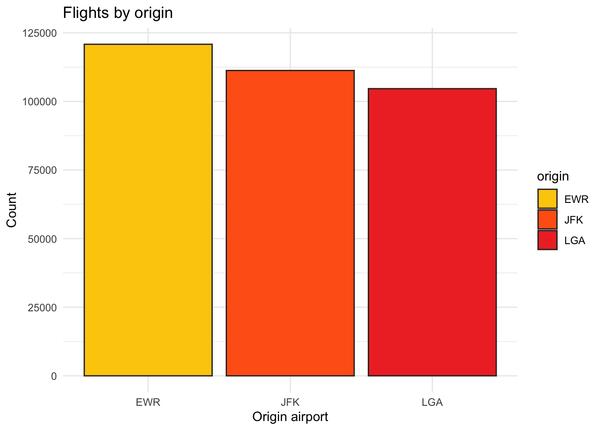
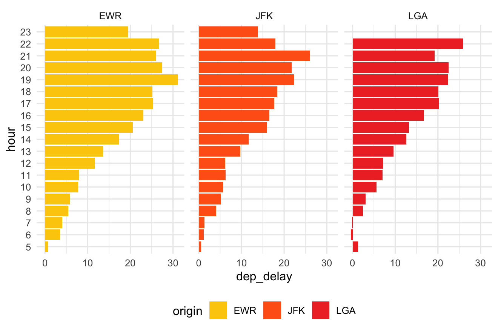
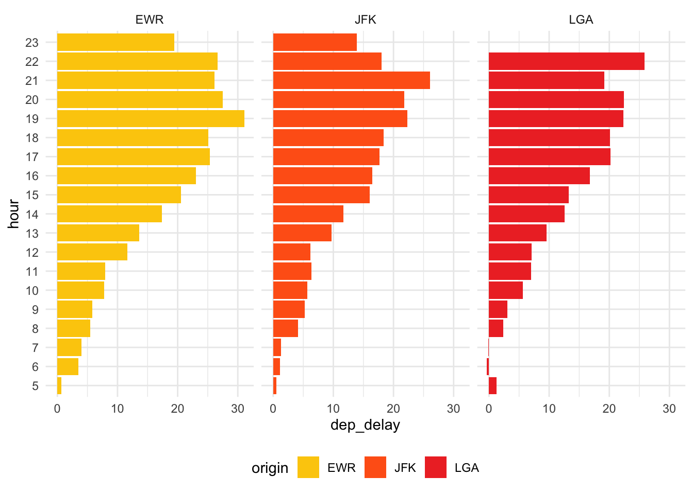

Diese Woche habt ihr euch im Seminar mit dem Visualisieren von Daten mit ggplot beschäftigt. Wie letzte Woche wollen wir euch hier einiges wiederholen, kombinieren und weiterdenken lassen.
Falls ihr an einer Stelle mal nicht weiterkommen solltet, sodass die folgenden Aufgaben nicht mehr lösbar sind, meldet euch bitte bei uns.
Punkte
Für jede Aufgabe bzw. Teilaufgabe gibt es Punkte - diese sind entsprechend kenntlich gemacht. Insgesamt gibt es für jedes Aufgabenblatt 5 Punkte. Aufgaben, die als [Bonus] markiert sind, geben keine Punkte.
Für Expert:innen
Manche Aufgaben erfordern Transferwissen, welches ihr im Seminar bisher so nicht direkt gelernt hat. Diese Aufgaben sind als [Für Expert:innen] markiert - hier berücksichtigen wir nicht nur die Lösung, sondern schon eure Lösungsversuche (falls ihr auf keine Lösung kommt).
Abgabe
Um eure Hausaufgabe abzugeben, ladet diese bitte als .qmd Datei im Moodle hoch. Etwaige andere Dateien (.html, assets-Ordner) müsst ihr nicht hochladen. Bitte benennt die Dateien entsprechend (bspw. hausaufgabe2_simon_krukowski.qmd, und schreibt hier in der Datei oben bei author euren Namen rein.
── Attaching core tidyverse packages ──────────────────────── tidyverse 2.0.0 ──
✔ dplyr 1.1.3 ✔ readr 2.1.4
✔ forcats 1.0.0 ✔ stringr 1.5.0
✔ ggplot2 3.4.4 ✔ tibble 3.2.1
✔ lubridate 1.9.2 ✔ tidyr 1.3.0
✔ purrr 1.0.2
── Conflicts ────────────────────────────────────────── tidyverse_conflicts() ──
✖ dplyr::filter() masks stats::filter()
✖ dplyr::lag() masks stats::lag()
ℹ Use the conflicted package (<http://conflicted.r-lib.org/>) to force all conflicts to become errors
library(nycflights13)
Aufgabe 1 [1 Punkt]
Für dieses Übungsblatt benötigt ihr einen neuen Datensatz, und zwar den flights Datensatz aus dem nycflights13 Package. Installiert euch dieses zunächst, aktiviert ihn und weist dann nochmal explizit den Datensatz dem Objekt flights hinzu:
Uns interessiert nun, von welchem Flughafen die meisten Flüge im Datensatz starten. Dabei hilft uns die origin Variable. Erstellt nun ein Balkendiagramm, welches auf der X-Achse origin hat, und auf der Y-Achse die Anzahl der entsprechenden Datenpunkte.
Von welchem Flughafen starten die meisten Flüge im Datensatz?
Antwort hier
Aufgabe 2 [1 Punkt]
Verschönert das obige Plot mit den Funktionen, die wir im Seminar kennengelernt haben, indem ihr:
einen Titel hinzufügt
die Farbe der Balken zu eurer Lieblingsfarbe verändert
die Achsen beschriftet
# Lösung hierflights %>%ggplot(aes(x=origin,fill=origin))+geom_bar(color="#2b2b2b")+theme_minimal()+scale_fill_manual(values =c("#fccc0a","#ff6319","#ee352e"))+ylab("Count")+xlab("Origin airport")+ggtitle("Flights by origin")

Aufgabe 3 [1 Punkt]
Ihr interessiert euch nun für die Abflugs-Verspätung (dep_delay) und fragt euch, wie sich diese in Abhängigkeit des Zeitpunkts im Jahr unterscheidet. Dazu bietet sich die month Variable an, welche den Monat als einfache Zahl enthält. Erstellt ein Plot, bei dem auf der X-Achse die Monate zu sehen sind, und auf der Y-Achse die Verspätung (dep_delay):
Könnt ihr hierzu geom_bar(x) ohne weiteres verwenden? Begründet eure Antwort.
Antwort hier
Aufgabe 4 [1 Punkt]
Ihr entscheidet euch, die Werte erst mithilfe von dplyr pro Monat zu mitteln, bevor ihr das Plot erstellt. Nutzt nun also group_by(x) und summarise(x), um die Werte pro Monat zu mitteln, bevor ihr das obige Plot erneut erstellt:
Solltet ihr Probleme mit NA Werten bekommen, denkt an Übungsblatt 4 und an filter(x).
Was fällt im Vergleich zum Plot aus Aufgabe 3 auf? Begründet eure Antwort.
Antwort hier
Aufgabe 5 [1 Punkt]
Für die letzte Aufgabe sollt ihr folgendes Plot rekreieren:

Um euch dies etwas zu vereinfachen, haben wir im folgenden Chunk schon ein paar Zeilen vorbereitet, an die ihr einfach über %>% eure ggplot(x) Befehle anschließen könnt. Die Farbpalette palette ist auch gegeben.
`summarise()` has grouped output by 'origin'. You can override using the
`.groups` argument.

Tipp
Über facet_wrap(origin~.) könnt ihr euer Plot wie im Bild in Abhängigkeit der Variable origin“facettieren” (siehe hier oder help(facet_wrap)). Diese überaus nützliche Funktion wird im Seminar noch öfter eine Rolle spielen.